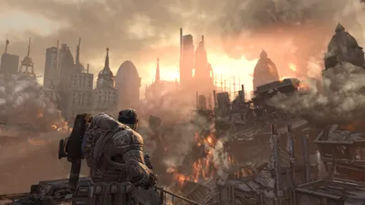
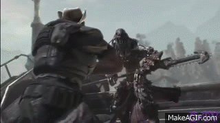
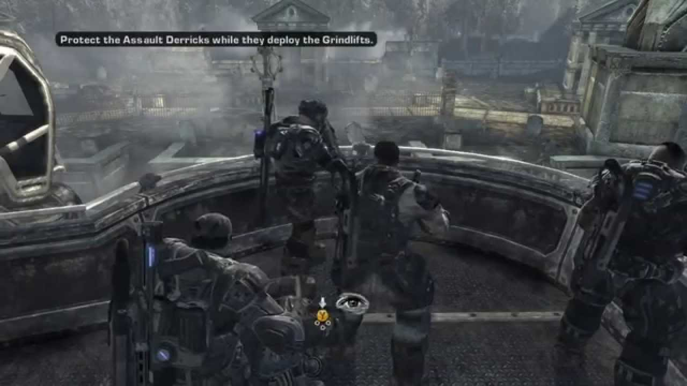
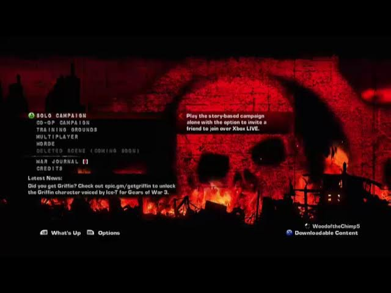

Gears of War 2
Voltar para Seleção do Game
 |
 |
 |
 |
Desenvolvedora: Epic Games
Plataforma: Xbox 360 (Retrocompatível com Xbox One e Series S/X)
Ano de Lançamento: 2008
Sinopse: Seis meses após a detonação da Bomba de Massa Leve, a humanidade descobre que a Horda Locust encontrou uma maneira de afundar cidades inteiras sob a terra.
O esquadrão Delta, liderado por Marcus Fenix, inicia uma contra-ofensiva desesperada, mergulhando literalmente no submundo de Sera para enfrentar a ameaça em seu próprio território. O jogo expande a jogabilidade do antecessor, introduzindo novas execuções, o uso de escudos e uma narrativa muito mais focada nos personagens e no drama da guerra.